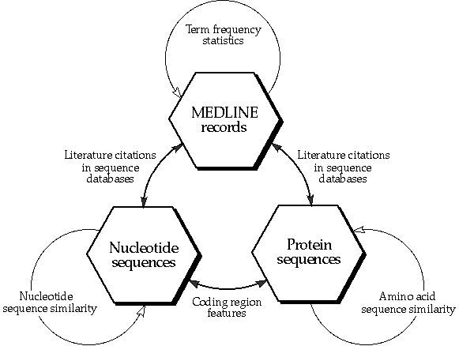
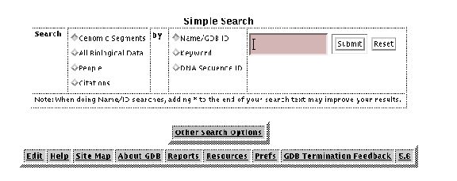

5 DATABASES
5.1 WHAT DATABASES ARE THERE?
Because there is often a substantial overlap between
the types of data that different database systems contain, no hard and
fast division of the types of database can be made. We are going to look
at the a number of groups.Some of these are
very complex and we do not have time to go into all of their capabilities,
but we hope to give you a good feel for the uses of these databases.
5.1.1 Navigating
There are several ways to reach the database pages.
All of the databases that are not local to the HGMP (like most of the databases
discussed in this section), there is a link provided on the GenomeWeb.
The GenomeWeb is a collection of links that are organized in a menu system.
For some of the most frequently used ones we have provided direct links
from the WWW Menu page. A third way of finding the correct link is to use
the search the HGMP pages, by using the search box present on almost every
HGMP web page.
5.1.2 Sequence & Bibliographic
There are two main nucleic acid sequence databases
and one main protein sequence database in widespread general use amongst
the biological community. The nucleic ones are EMBL and GenBank and the
protein one is SWISS-PROT.Shortcuts to all
these databases can be found on the Genome Web (accessed from the HGMP
main page).
Entrez
Entrez is a set of tightly linked databases, including
nucleic sequences, protein sequences and MEDLINE. It has a very nice interface
and is a very powerful and useful system. If you do nothing else today,
learn how to use Entrez.It has links to itself!
In other words when you find an interesting nucleic sequence entry, you
can quickly find others like it, the corresponding protein entry and abstracts
of papers describing it (see figure 1).http://www3.ncbi.nlm.nih.gov/Entrez/There
is a direct link to Entrez from the WWW Menu page (at the bottom).Figure
1: Entrez data searching
SRS
SRS is a system that holds sequence databases and
other databases and allows you to search them for words in the annotation.
It holds each type of database individually, unlike Entrez which lumps
all (for example) nucleic acid databases into one non-redundant nucleic
database.http://srs5.hgmp.mrc.ac.ukThere
is a direct link to SRS from the WWW Menu page (bottom row).
5.1.3 Genomic
GDB
GDB was devised as the ultimate repository of human
mapping and genomic data. It has several ways it can be searched and some
very powerful searches can be made. Simple searches for information on
genes, clones etc. can be made simply. It has links to Entrez, Sequence
databases, MGI, other genome databases, OMIM, GeneCards, HGMD, etc.http://www.hgmp.mrc.ac.uk/gdb/gdbtop.htmlThere
is a direct link to GDB from the WWW Menu page (bottom row).
ACeDB
ACeDB started life as the repository for mapping
and genomic data for the nematode C. elegans
. Data on several human
chromosomes and other organisms' genomes are held in ACeDB-style databases.
To access all of this you currently need X-Windows (and an HGMP account),
although these databases should increasingly be available on the WWW.
-
Follow the link from the WWW Menu page :
Genomes -> Human Genome Databases
or Nematode Genome Databases
5.1.4 Clinical & Mutation
OMIM
A very simple and very useful database of phenotypes
of diseases in humans with a substantial genetic component. It has links
to MEDLINE, Entrez, HGMD, GDB, Coriell and other databaseshttp://www.hgmp.mrc.ac.uk/omim/There
is a direct link to OMIM from the WWW Menu page.
HGMD
A database of sequences and phenotypes of human disease-causing
mutations. It has links to OMIM, GDB and to databases specific for a locus.http://www.uwcm.ac.uk/uwcm/mg/hgmd0.htmlFollow
the link from the HGMP main page :Genome
Web -> Genome Databases -> Human Mutation Databases -> The Human Gene Mutation
Database - HGMD (Cardiff)Note
that there are also an increasing number of disease specific mutation databases
(not covered in this course).
5.1.5 Homologies
MGI
MGI is the repository for mouse mapping gene expression
and genomic data with human homologies. It has links to GDB and Entrez.http://mgd.hgmp.mrc.ac.uk/There
is a direct link to MGI from the WWW Menu page.
5.1.6 Integrated
GeneCards
GeneCards is a database that intends to address some
of the problems of information overload and time-consuming data-mining
by integrating biomedical information taken from several sources (GDB,
MGD, OMIM, SWISS-PROT, HGMD, Doctor's Guide to the Internet, etc.), and
by presenting them concisely.This is your
best starting point when searching for human genomic information. It has
links to many, many other databases.http://bioinformatics.weizmann.ac.il/cards/There
is a direct link to Genecards from the WWW Menu page.
KEGG
The primary objective of KEGG is to computerize the
current knowledge of molecular interactions; namely, metabolic pathways,
regulatory pathways, and molecular assemblies. At the same time, KEGG maintains
gene catalogs for all the organisms that have been sequenced and links
each gene product to a component on the pathway. KEGG also organizes a
database of all chemical compounds in living cells and links each compound
to a pathway component.http://www.genome.ad.jp/kegg/kegg.html
WIT
WIT is short for What Is There. It’s similar to
the KEGG database, in that it tries to integrate all the knowledge there
is about an organism. WIT includes a set of over 2900 diagrams depicting
metabolic pathways. This collection is from the Metabolic Pathway
Database
constructed by Evgeni Selkov and his team. Each pathway
diagram includes a set of functional roles
. The goal of producing
a metabolic reconstruction is to identify which pathways are present in
an organism and which genes implement the functional roles.http://wit.mcs.anl.gov/WIT2/
5.2 HOW TO ACCESS THE DATABASES
Most of these databases are available via the WWW.Some,
especially certain ACeDB-style databases require an X-Windows environment
and most of the important ones can be accessed from the HGMP-RC - try searching
for them in the HGMP's WWW menu if you are stuck.
5.3 HOW DO THEY INTERLINK?
Most of the WWW-based databases will have links to
related data in other databases and these links should be followed as it
will save you much time.Be aware that sometimes
the links between databases are incorrect and you will arrive at an inappropriate
entry. Keep your wits about you.
5.4 WHAT IS A GOOD PLACE TO START?
If you want to:
-
find a gene location - GDB, GeneCards
-
find a sequence or bibliographic reference - Entrez, SRS
-
most other things – GeneCards
5.5 PRACTICALS
We will use the sequence we used in chapter 4 as
a starting point again, to see what we can learn from it, using some of
the database search engines.Entrez
-
What can we find out about cardiac actin in Xenopus
leavis
using the databases? Let's start by finding the protein sequence,
so we start up Entrez. Entrez is available from the NCBI in the States
(network connections to the USA can be very slow).
-
Use the Entrez link at the bottom of the WWW Menu or use the full
URL pathname:
http://www.ncbi.nlm.nih.gov/Entrez/
-
It links together MEDLINE, DNA sequences, protein
sequences. And it links together similar DNA sequences, similar protein
sequences, similar MEDLINE documents. (Neighbouring). It gives the abstracts
of the Medline papers.
-
Click on Nucleotides.
-
Enter
what you want to search for :
cardiac actin xenopus leavis
-
and click on 'Search'.
-
Click on the Retrieve 2 Documents button.
-
At the top of the list of hits is the entry in the database we used for
the alignment easrlier in chapter 4, with locus name XLACTCAG.
-
From here
on you can choose several links.
-
Click on:
-
GenBank Report
- to see the sequence and annotation in GenBAnk format
-
FASTA report
- to see just the sequence in FASTA format
-
ASN.1 report
- don't bother with this
-
Graphical view
- to see the sequence features in colour
-
protein links
- to see the protein sequences
-
nucleotide neighbours
- to see other nucleotides similar to this
one.
-
MEDLINE links
- to see the abstracts of papers describing the sequence
-
Lets find more papers like the ones we have found:
-
Click on the See Related Articles
link.
-
You have just done a very wonderful thing. You have pulled out a set of
papers on the same, or similar topic. You can quickly educate yourself
about a topic this way!
An alternative to Entrez is SRS, or the Sequence
Retrieval System. The SRS systems runs on the HGMP computers and is therefore
much faster then the USA based entrez, albeit not as pretty and interconnected.SRS
-
Choose SRS from our WWW pages and Click on Start.
-
Click
on the check buttons besides the databases you wish to search in. We want
a nucleotide sequence, so we check EMBL
and
EMBLNEW checkbox.
-
Click on Continue
-
In the
first search field, enter the phrase
cardiac actin
-
The dropdown menu shows All text
. This means
SRS will search all fields of the database entries that contain some kind
of text.
-
In the second search field we type
Xenopus laevis
-
Choose
Organism from the second dropdown menu.
This will restrict the search to those database entries that come from
the organism Xenopus laevis
.
-
Click
on
Do Query
-
The next web page will show you all the entries that match your query and
if nothing much has changed since we last updated this manual, you should
be presented with only one link, called EMBL:XLACTCAG. Clicking this will
take you to the entry of our well known cardiac actin gene.
-
The database entry for actin has numerous hyperlinks (underlined words).
These links are links to other databases or to a subset of the information.
Clicking on on of the links labeled exon, will take you to a page
that shows the sequence of this exon only. Clinking on the link CDS
(which is short for CoDing Sequence) will take you to a page that shows
all the exons spliced together.
-
There are also links to other databases that share some information with
this entry. The DR fields are the Database Reference fields. These DR fields
contain of two or more fields. The first is the name of the database where
there is a entry, and the second field (seperated by a semicolon) is the
entry ID in that database. A possible third field will show the locus name
(if present) of that entry. Locus names are usualy more readible forms
of the entry ID. In the case of the SwissProt entry, the ID for the actin
protein is P04751 and the locus name is ACT1_XENLA, the second one is much
easier to remember than the first one, since it conveys some of the information
about the name of the protein and the organism it came from. But the locus
name is not always unique, and the ID is.
-
Clinking on the ID numer of the SWISSPROT entry will take you to the entry
for actin in SwissProt, which has some information about the function of
actin.
5.6 GDB
For the next practical we will leave the actin gene
for a while and look at some disease related gene in humans. Aniridia is
a disease of the eyes, some of the symptoms include : Aniridia; Decreased
vision; Cataract; Glaucoma; Nystagmus; Atypical colobomata; Slitlike iris
stromal defects; Corneal pannus; Foveal hypoplasia; Optic nerve hypoplasia;
Thinned iris. Now I’m not a medical doctor, but this sounds bad to me
! It has been known to be caused by a gene called PAX6 and this is the
gene we are going to concentrate on.OK, so
let's try to see if we can find information on where in the genome PAX-6
is mapped, what markers are near it and what available materials(clones
etc.) contain it, so we start: GDB (from the link at the bottom of the
WWW Menu).GDB holds mapping information on
the Human genome project. It holds information on anything useful in describing
the location of points on the genome. It holds no information on gene products
e.g. proteins.
5.6.1 Nomenclature in GDB
GDB uses some terms that are not found in the general
literature:
-
Genomic Segment - a region of the genome, including
-
loci
-
probes
-
sequences
-
genes
-
gene elements
-
amplimers
-
breakpoint
-
clones
-
cytogenetic markers
-
fragile sites
-
ESTs
-
contigs
-
repeats.
-
Amplimer
- a pair of PCR primers.
5.6.2 What GDB contains
-
Genomic Segments
-
Maps - from a variety of sources, including:
-
Cytogenetic maps
-
Linkage maps
-
Radiation hybrid maps
-
Contig maps
-
Integrated maps, including RH Consortium Transcript maps and chromosome
committee maps.
-
Variations - polymorphisms including Genethon and CHLC microsatellite repeats
5.6.3 Simple Search
This is the small form on the GDB main page:Figure
1
GDB simple search formIt has 4 parts:
-
Section of the database to search in.
-
The type of search - "Name/GDB ID", "Keyword" or "DNA Sequence ID"
-
A field for you to type the thing to search for.
-
The submit button
Section of the database to search in
-
Genomic Segments - all biological data except for
maps and gene products
-
All Biological Data - what it says
-
People - a directory of people interested in human genomics
-
Citations - references to papers on the biological data
The type of search
-
Name/GDB ID - search for the formal name of a thing
e.g. "CFTR" or a wildcard: "AB O*"
-
Keyword - search for free text. This is slow. Use the Booleans "OR" and
"AND " between words and "*" for wildcards.
-
DNA Sequence ID - the ID number of that DNA object in the GDB database.
You usually won't know this.
Other Search Options
This gives some simple and some complex means of
searching for things. It also gives some very useful example searches.
Back to PAX-6 ... in GDB
OK - so we want to find mapping information on PAX-6.
I happen to know that the format name of the PAX-6 locus in GDB is PAX6,
so I can do a quick search using the Name/GDB ID option, otherwise I would
have to do a slow Keyword search to find it.So,
I click on Name/GDB ID and enter PAX6 and click on the "submit" button.
We get information on a couple of Amplimers and the gene itself. Clicking
on the link to the Gene we get a page of links to further information about
it. We see from the Cytogenetic Localization table that it maps to 11p13.
In the Related Segments table we have a list of amplimers and clones that
it overlaps. Clicking on these gives further information on obtaining them.In
“Nucleic Acid Sequences and Protein Sequences” there are links to Entrez
or SRS. In Homologies there are links to MGI (MGD) amongst other species'
databases. In Phenotypes there are links to OMIM. There are also links
to HGMD, GeneCards and a Pax6 mutation database.Let's
have a look at the mouse homologies by clicking directly on the MGD link
at the bottom of the GDB PAX6 page. This sends us to the copy of MGD in
the States, rather than the local mirror of MGI We see information on mouse
genes, DNA segments, cytogenetic markers and QTLs. Each record may include
marker symbol, name, other lunofficialn names or symbols, nomenclature
history, alleles, aliases, chromosomal assignment, centimorgan location,
cytogenetic band, EC number (for enzymes), phenotypic classifications,
MGI accession numbers and supporting references.GDB
Practical
-
Find a list of articles by "Vogelstein". Which of
his papers, co-authored by Fearon is called "Clonal analysis using recombinant
DNA probes from the X-chromosome"? What section of the genome is discussed?
Hint:
Use Simple Search to find all the journal articles authored by Vogelstein.
-
Find a list of the HPV genes. Study the HPV6AI1 gene.
What does HPV stand for? Where is HPV6AI1 located?
Hint:
These are all named HPVsomething. Use wildcards in the Simple Search with
Name/ID.
-
How many genes have been identified on chromosome
11?
Hint:
Look at the "Reports and Statistics" link at the bottom of the main page.
5.7 CLINICAL & MUTATION
Go back to the GDB PAX6 page. There is a link from
there to OMIM. You don't see it? It is cleverly disguised as a link to:
Phenotypes: Aniridia-2Once again this takes
us to the OMIM in the States rather than the local mirror of OMIM so it
may take a bit of time. OMIM stands for Online Mendelian Inheritance in
Man.OMIM is an on-line version of Dr Victor
McKusick's Mendelian Inheritance in Man (MIM). It's a catalogue of human
genes and genetic disorders, with over 8650 entries. This is the database
to go to search for human genetic diseases by their phenotype. Let us go
back to the GDB PAX6 page. We are now going to look at the Human Gene Mutation
Database (HGMD). If you click on: Human Gene Mutation Database: PAX6, this
takes us into the entry in HGMD describing the mutations that have been
found and characterised in PAX-6.Note that
at the bottom of the page is a link to a database that is solely devoted
to PAX-6 mutations, as well as links back to GDB and OMIM.OMIM
Practical1)
Marfan Syndrome
-
News reports have discussed the possibility of cloning
samples of Abraham Lincoln's DNA from preserved hair or blood to determine
whether he had Marfan Syndrome. What are the clinical characteristics of
this disease? Has a map assignment been made?
2) Low Birth Weight
-
Is low birth weight associated with any Mendelian
disorders?
3) Duchenne Muscular Dystrophy
-
Find the entry for Duchenne muscular dystrophy.
4) Sneezing
-
What name is given to light induced sneezing?
5) p53/TP53
-
In connection with how many disorders/traits are
both p53 and TP53 mentioned? How would you find the number of entries that
just contained p53 or TP53, but not both. Would a search on *p53 be a good
way to do this search?
6) Hemoglobin Beta
-
How many allelic variants have been identified at
the hemoglobin beta locus (Ignore the last of these)? Look at the first
five of them.
-
7) Retinitis Pigmentosa-5
-
Find documents with "retinitis pigmentosa 5" in their
titles.
5.8 INTEGRATED
OK - so we have seen that GDB is a pretty good starting
point if you have searched for a gene or some other human genomic location.
Let us now look at GeneCards. We have saved what is possibly the best database
for last.Integrated databases
-
Start up GeneCards from the WWW site:
http://bioinfo.weizmann.ac.il/cards/
-
Type pax-6 into the search field.(Keywords to search
for may be a human or mouse gene, protein, disease, cell type, tissue,
chromosome or a related word. Use '*' as a wild card to extend the number
of matches to the keyword.)
-
Click on the Display link to see the results.
-
Oh wow! Look at all these goodies!
-
Unfortunately, the GDB, OMIM, etc. databases being pointed to are in the
States, so the links are a bit slow, but everything is there waiting for
you!
-
Clicking on the More like this (previous page, under the Display link)
gives you a set of hits to HOX genes and to genes with names like misspellings
of PAX, and to other genes on chromosome arm 11p, and....
5.9 PRACTICAL PROJECTS
There is probably far more work here than you can
fit into the remaining course time. We have just included lots of projects
in case you feel you need to do more practicals in your free time.GeneCards
is an excellent starting point for finding information on human genes,
but it tends to be slow. If you do not have the patience to wait for GeneCards,
or if you are not searching for a human gene, then the next best place
to start is often Entrez.Finding information
in databases often involves some lateral thinking and detective work. Now,
make like Sherlock Holmes!MigraineAbout
20% of women and 12% of men get migraines. There have been reports recently
that susceptibility to having migraines (Familial Hemiplegic Migraine)
has a genetic component and a gene may have been found.
-
Can you find the gene sequence?
-
Can you find papers in Medline describing the action of this gene?
-
Can you find the location of this gene on its chromosome?
-
What clones or primers contain this gene?
-
Can you find any information on mutations in this gene?
-
Can you find descriptions of the disorder?
-
Are the figures given above for the percentage of men and women getting
migraines correct?
Blue Mountains Funnel Web Spider
-
You have just been stung by a Blue Mountains Funnel
Web Spider. What can you find out about about the nature and action of
its venom before you die?
(Hint: work quickly)Activator
of liver function 1
-
Find out more about this gene, it is also described
as hepatic phenotype restoration inducing sequence.
-
Where is it mapped to?
-
What is its nucleic acid sequence?
Hint:
Are you sure?Hint:
It is NOT a histone.Hint:
The GDB database could be wrong!
-
Who has worked on this gene?
-
Who can you obtain a clone containing this gene from?
Oriental fire-bellied toad
-
Find the protein sequence of the Phe13 bombesin receptor
of the Oriental fire-bellied toad
-
Look at the MEDLINE abstract of the paper describing it.
-
Find other papers on related topics
-
Look at the abstract of the first related article that you haven't read.
-
Look at the protein sequence described in this paper
-
Look at related sequences.
-
Look at the MEDLINE article.
-
Repeat until boredom sets in. You are now a world expert on Bombina orientalis
gastrin-releasing peptides :-)
Prion
-
Can you find a succinct and complete description
of the current state of knowledge of the molecular biology of prion diseases?